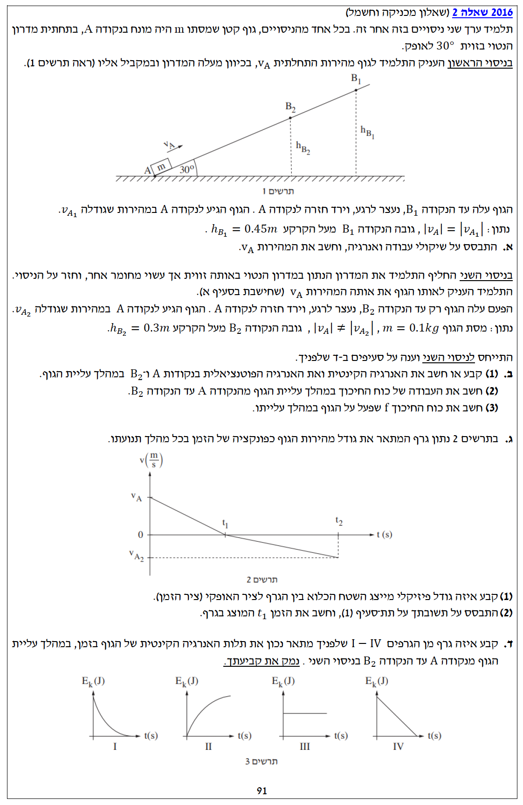

פתרון מלא, מודרך ומוסבר צעד-אחר-צעד, כולל ניתוח עבודה ואנרגיה.
עודכן:--- --:--:--

[תמונת השאלה המקורית]לא נמצאה תמונה בשם question-image.png באותה תיקייה.
סעיף א': חישוב המהירות ההתחלתית בניסוי הראשון
מה נתון:
גוף נזרק במעלה מדרון מנקודה \(A\) שגובהה \(h_A = 0\text{m}\).
הגוף מגיע לשיא הגובה בנקודה \(B_1\) ונעצר לרגע: \(v_{B_1} = 0\text{m/s}\).
גובה הנקודה \(B_1\) מעל הקרקע: \(h_{B_1} = 0.45\text{m}\).
נתון חשוב: גודל המהירות שבה הגוף חוזר לנקודה \(A\) שווה לגודל המהירות ההתחלתית שבה נזרק.
תאוצת הכובד: \(g = 10\text{m/s}^2\).
מה מחפשים:
את גודל המהירות ההתחלתית של הגוף בנקודה \(A\), המסומנת כ-\(v_A\).
נוסחאות ועקרונות בשימוש:
כאשר גוף חוזר לאותה נקודה בדיוק באותה מהירות (כלומר האנרגיה הקינטית זהה להתחלה), נסיק שאין איבוד אנרגיה ולכן המדרון חלק. לכן נשתמש בחוק שימור אנרגיה מכנית כדי לחלץ את המהירות:
מכיוון שגודל המהירות בנקודה \(A\) בירידה שווה לגודל המהירות ההתחלתית בנקודה \(A\) בעלייה, האנרגיה המכנית של המערכת נשמרה במלואה בנקודת הייחוס. משמעות הדבר היא שלא פעלו כוחות לא משמרים שעשו עבודה, כלומר המדרון בניסוי זה הוא חלק (ללא חיכוך).
שלב 2: חישוב המהירות מתוך שימור אנרגיה
נשווה את האנרגיה בנקודה \(A\) (אנרגיה קינטית בלבד, שכן הגובה מוגדר כאפס) לאנרגיה בנקודה \(B_1\) (אנרגיה פוטנציאלית בלבד, שכן המהירות מתאפסת בשיא הגובה):
הערת מורה:
זוהי הבנה פיזיקלית חשובה מאוד! אם המדרון היה מחוספס, עבודת כוח החיכוך הייתה גורעת אנרגיה מהמערכת גם בעלייה וגם בירידה. במקרה כזה, הגוף היה חוזר לנקודה A עם מהירות קטנה יותר מזו שנזרק בה. השוויון במהירויות הלוך-חזור הוא ה"אישור" שלנו לכך שניתן להשתמש בחוק שימור אנרגיה מכנית בבטחה.
סעיף ב' (1): אנרגיות קינטיות ופוטנציאליות בניסוי השני
מה נתון:
בניסוי השני המדרון מחוספס (יש חיכוך).
מסת הגוף: \(m = 0.1\text{kg}\).
מהירות התחלתית זהה: \(v_A = 3\text{m/s}\).
הגובה בנקודה \(A\) נותר: \(h_A = 0\text{m}\).
הגוף נעצר לרגע ב-\(B_2\): \(v_{B_2} = 0\text{m/s}\).
גובה הנקודה \(B_2\): \(h_{B_2} = 0.3\text{m}\).
מה מחפשים:
את הערכים של האנרגיה הקינטית (\(E_k\)) והאנרגיה הפוטנציאלית הכובדית (\(U_g\)) בנקודות \(A\) ו-\(B_2\).
הערת מורה:
שימו לב לסדר ולרישום המדויק. חשוב תמיד לציין את נקודת הייחוס לאנרגיה הפוטנציאלית (כאן בחרנו את נקודה A כגובה אפס). אנו רואים שהאנרגיה הכוללת בנקודה A היא 0.45J, ואילו בנקודה B2 היא רק 0.3J. לאן נעלמו 0.15J? התשובה בסעיף הבא!
סעיף ב' (2): חישוב עבודת כוח החיכוך
מה נתון:
אנרגיה כוללת ב-\(A\): \(E_A = 0.45\text{J}\).
אנרגיה כוללת ב-\(B_2\): \(E_{B_2} = 0.3\text{J}\).
מה מחפשים:
את העבודה של כוח החיכוך \(W_f\) מנקודה \(A\) לנקודה \(B_2\).
נוסחאות ועקרונות בשימוש:
כוח החיכוך הוא הכוח הלא-משמר היחיד שמבצע עבודה במערכת זו (הכוח הנורמלי מאונך לתנועה ולכן עבודתו אפס).
\(W_{\text{nc}} = \Delta E = E_{final} - E_{initial}\)
הערת מורה:
סימן המינוס בעבודה הוא קריטי! הוא מצביע על כך שכוח החיכוך פועל בכיוון המנוגד לכיוון התנועה (ההעתק), ולכן הוא "לוקח" (גורע) אנרגיה מכנית מהמערכת וממיר אותה לאנרגיית חום.
סעיף ב' (3): חישוב גודל כוח החיכוך
מה נתון:
עבודת כוח החיכוך: \(W_f = -0.15\text{J}\).
זווית המדרון: \(\alpha = 30^\circ\).
הגובה אליו הגוף הגיע: \(h_{B_2} = 0.3\text{m}\).
מה מחפשים:
את גודלו של כוח החיכוך \(f\) שפעל על הגוף בזמן עלייתו.
נוסחאות ועקרונות בשימוש:
נמצא את המרחק לאורך המדרון בעזרת טריגונומטריה, ואז נשתמש בהגדרת העבודה.
\(\sin(\alpha) = \frac{h}{\Delta x}\)\(W = F \cdot \Delta x \cdot \cos(\theta)\)
כעת, נציב בנוסחת העבודה. הזווית בין כיוון התנועה לכיוון כוח החיכוך היא \(180^\circ\):
\[ W_f = f \cdot \Delta x \cdot \cos(180^\circ) \]
\[ -0.15 = f \cdot 0.6 \cdot (-1) \]
\[ 0.15 = 0.6f \implies f = \frac{0.15}{0.6} = 0.25\text{N} \]
מסקנה: \( f = 0.25 \text{ N} \)
הערת מורה:
שימו לב בתרשים הכוחות: בחרנו את ציר ה-x החיובי במעלה המדרון (כיוון התנועה). כוח החיכוך פועל במורד המדרון, ולכן הזווית בינו לבין ההעתק היא בדיוק 180 מעלות. כך נוצר הסימן השלילי בעבודה. גודל הכוח עצמו הוא תמיד ערך חיובי!
סעיף ג' (1): משמעות השטח בגרף מהירות-זמן
מה נתון:
גרף המתאר את המהירות \(v\) כתלות בזמן \(t\).
תנועה בקו ישר (לאורך המדרון).
מה מחפשים:
לקבוע איזה גודל פיזיקלי מייצג השטח הכלוא בין הגרף לבין ציר הזמן.
נוסחאות ועקרונות בשימוש:
פעולת האינטגרל על המהירות נותנת את ההעתק:
\(\Delta x = \int v(t) dt\)
הסבר:
השטח הכלוא בין גרף מהירות-זמן לבין הציר האופקי (ציר הזמן) מייצג את ההעתק של הגוף לאורך המסלול בפרק הזמן הנתון.
הערה: מכיוון שהתנועה עד לזמן \(t_1\) היא בכיוון אחד בלבד (ללא חזרה), גודל ההעתק שווה למרחק שעבר הגוף.
מסקנה: השטח מייצג את ההעתק (\(\Delta x\))
הערת מורה:
חשוב לדייק במונחים! השטח ה"מסומן" (שטח מעל הציר חיובי, שטח מתחת לציר שלילי) נותן את ההעתק. אם נסכום את ערכי השטחים המוחלטים, נקבל את הדרך הכוללת (המרחק).
סעיף ג' (2): חישוב הזמן \(t_1\)
מה נתון:
מהירות התחלתית ב-\(t=0\): \(v_A = 3\text{m/s}\).
בזמן \(t_1\) הגוף נעצר ב-\(B_2\): \(v(t_1) = 0\text{m/s}\).
הערת מורה:
זוהי דרך אלגנטית מאוד לפתור! היינו יכולים גם לחשב את התאוצה באמצעות חוק שני של ניוטון, ואז להשתמש בנוסחת מהירות-זמן של קינמטיקה. אבל שימוש בגרפים ובשטחים חוסך לנו שלבים רבים ומונע טעויות חישוב מיותרות.
סעיף ד': בחירת גרף אנרגיה קינטית
מה נתון:
תנועת עלייה על מדרון עם חיכוך.
גרף המהירות ליניארי יורד: \(v(t) = v_A - |a|t\).
ארבע אפשרויות לגרפים של \(E_k\) כתלות ב-\(t\).
מה מחפשים:
איזה מן הגרפים I - IV מתאר נכונה את השתנות האנרגיה הקינטית במהלך העלייה, ולנמק.
נפתח את פונקציית האנרגיה הקינטית כתלות בזמן. תאוצת הגוף בזמן העלייה קבועה והפוכה לכיוון התנועה, לכן נציב \(v(t) = v_A - at\) (כאשר \(a > 0\) הוא גודל התאוצה):
\[ E_k(t) = \frac{1}{2}m(v_A - at)^2 \]
מבחינה מתמטית, זוהי משוואה של פרבולה (ממעלה שנייה). מכיוון שהמקדם של \(t^2\) הוא חיובי (\(\frac{1}{2}ma^2\)), הפרבולה היא מסוג "צוחקת" (קמורה כלפי מטה - Convex).
בזמן \(t=0\) לאנרגיה הקינטית יש ערך מקסימלי (\(0.45\text{J}\)). ככל שהזמן עובר, המהירות קטנה ולכן האנרגיה הקינטית קטנה, עד שהיא מתאפסת בדיוק בזמן \(t_1\) (נקודת מינימום של הפרבולה, שם \(v=0\) ולכן השיפוע של גרף האנרגיה הוא אפס).
גרף III ו-IV מתארים פונקציה קבועה וליניארית - נפסל כי הפונקציה שלנו ריבועית.
גרף II מראה עלייה באנרגיה - נפסל כי המהירות קטנה ולכן האנרגיה קטנה.
גרף I מציג ירידה בצורת פרבולה צוחקת שמתאפסת עם שיפוע אפס - מתאים בדיוק!
מסקנה: הגרף הנכון הוא גרף I
הערת מורה:
אפשר לפסול את הגרפים האחרים גם בעזרת היגיון פיזיקלי פשוט, ללא נוסחאות! הכוחות שגורמים לאיבוד האנרגיה הקינטית (כובד וחיכוך) עושים עבודה לאורך הדרך. בתחילת התנועה הגוף מהיר מאוד, ולכן בכל שנייה שעוברת הוא מספיק לעבור מרחק רב ולאבד הרבה אנרגיה. לקראת העצירה הגוף איטי, ולכן בכל שנייה הוא עובר מרחק קטן יותר ומאבד פחות אנרגיה. ירידה שתחילה היא תלולה ולאחר מכן הולכת ומתמתנת בהדרגה, מתאימה בדיוק לצורה הקעורה כלפי מעלה שבגרף I.
נוסח השאלה המקורית
[תמונת השאלה המקורית]לא נמצאה תמונה בשם question-image.png.